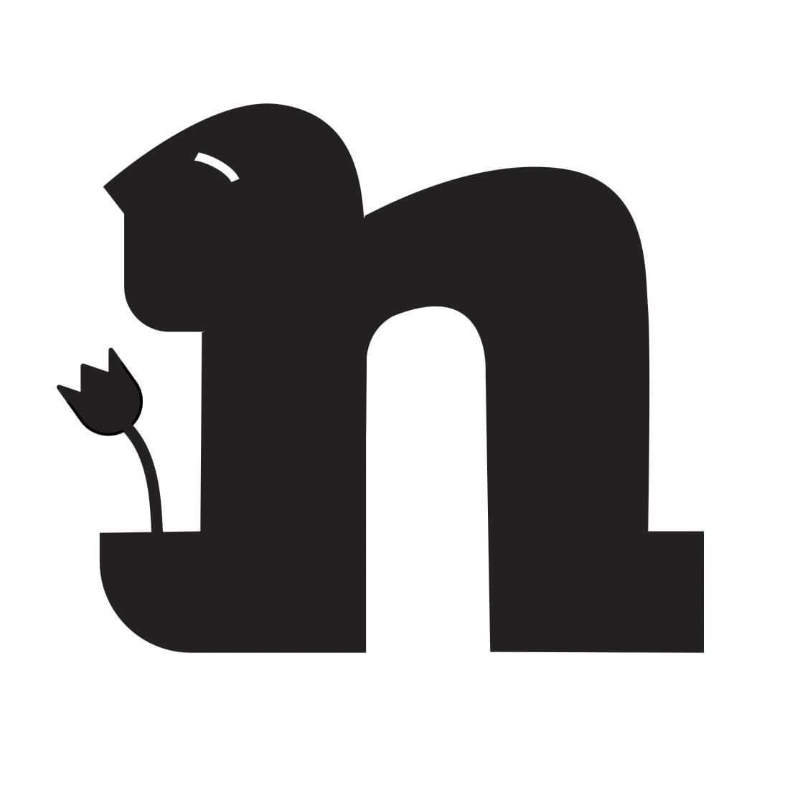

Case Study · Design · 2025
Reductive Symbols
This project transforms the word "apology" into an embodied visual expression of human emotion through reductive design. The goal was to demonstrate how typography can communicate feeling and gesture beyond literal text, making abstract concepts tangible through form manipulation.

Concept
Design Approach
The letterform is restructured to resemble a slouched figure, visually referencing nonverbal expressions of contrition and vulnerability. Each curve is derived from the original typeface to maintain typographic continuity while pushing the form toward symbolic representation. The reduction process strips away unnecessary detail, leaving only the essential shapes that convey both the word's meaning and its emotional weight. The final symbol balances abstract form with intuitive recognition.
Result
The design successfully merges typography with emotional clarity, proving that letterforms can embody human expression. The reductive symbol communicates "apology" both linguistically and viscerally, demonstrating typography's power as a carrier of meaning beyond words.